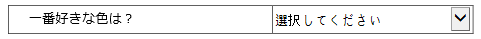
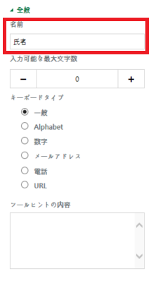
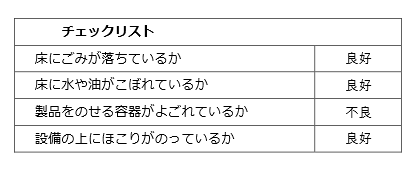
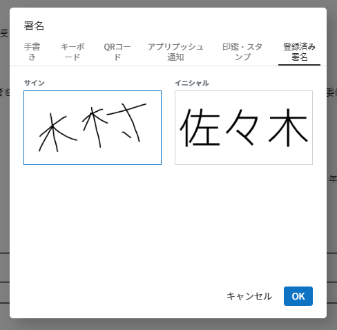
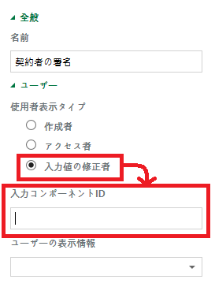
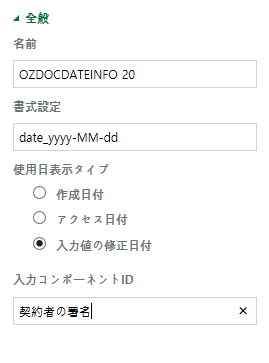

フォームビルダーの紹介¶
フォームビルダーの概要¶
フォームビルダー フォームビルダーは、OZ in Office とも言います。OZ in Officeとは、Microsoft Office で作成した文書を入力機能を備えた電子文書に変換するフォームエディターです。OZ in Office を使用すると、既存の Excel、Word、PowerPoint の文書フォーム (契約書、申込書、同意書、稟議書など) を電子文書に簡単に変換できます。
従来は、会社で Excel、Word、PowerPoint 文書を電子文書として開発するには、プログラミング開発が必要で、開発者向けのプログラミング開発ツールが必要でした。ただし、OZ in Office を使用すると、Office 製品を使用できるユーザーであれば、誰もが電子文書を簡単に作成できます。
OZ in Office は MS Office の Add-in として搭載され、リボンメニューに表示されます。電子署名、チェック、テキスト、カメラ、録音など、OZ 製品の多様な入力機能を提供しています。
OZ in Office の入力機能を利用して電子文書を作成するプロセスは次のとおりです。
{kind=link}
OZ in Office の使用フロセス
フォームビルダーのダウンロード¶
フォームビルダーのダウンロード 1. eformsign にログインした後、ダッシュボード画面の左上にあるメニューアイコン () をクリックしたら、サイドバーメニューが表示されます。そのサイドバーメニューの一番下にある フォームビルダーをダウンロード ボタンをクリックします。
{kind=link}
フォームビルダーのダウンロードボタンの位置
2. eformsign フォームビルダーのダウンロードページが次のように表示されます。ページの一番下に フォームビルダーのダウンロード ボタンをクリックします。
{kind=link}
フォームビルダーのダウンロードページ
3.フォームビルダーの実行可能ファイルの保存先を指定してダウンロードします。
フォームビルダーのインストール¶
- フォームビルダーの実行可能ファイルをクリックして実行します。
2. 次のウィザード画面が表示されれば、オプションのうち すべて（C) を選択し、 次へ > ボタンをクリックします。

フォームビルダーのインストール画面 (1)
- インストールを続行すると、次の画面が表示されます。
{kind=link}
フォームビルダーのインストール画面 (2)
4. インストールが完了しました。完了 ボタンをクリックして、インストール画面を閉じます。
{kind=link}
フォームビルダーのインストール画面 (3)
5. MS Office (Word、Excel、PowerPoint) を実行して、フォームビルダーが正しくインストールされていることを確認します。次のとおり OZ in Word/Excel/PowerPoint が表示されれば、正常にインストールされていることです。
{kind=link}
OZ in Word のリボンメニュー
フォームビルダーのメニューの構成¶
フォームビルダーをインストールした後、MS Office の Excel や Word 、PowerPoint を実行すると、リボンメニューに OZ in Excel、OZ in Word、OZ in PowerPoint タブが追加されていることが確認できます。
{kind=link}
Microsoft Office のOZ in Office リボンメニュー
- ファイル：作成した文書を電子フォームで実行することもできますし、eformsign にファイルをアップロードしたり、eformsign からダウンロードしたりすることもできます。
- プロパティ：コンポーネントのプロパティを設定します。
- 入力：電子フォームに使用するコンポーネントを追加します。
- 情報：電子フォームにメンバーまたは使用日情報を自動で入力するために、使用者、使用日情報のコンポーネントを追加します。
- 配置：コンポーネントを選択して、目的の箇所とサイズで追加します。配置 は、Word と PowerPoint でのみサポートします。
- 削除：コンポーネントを選択した後、「削除」ボタンをクリックすると、コンポーネントがを削除されます。
- ウィンドウ：コンポーネントの「プロパティ」タブを開くか、コンポーネントを選択します。
- ヘルプ： フォームビルダーのバージョンを確認し、更新を実行します。
コンポーネントの概要¶
コンポーネント コンポーネントは、ユーザーが電子文書にコンテンツを入力するための入力欄として機能します。署名、チェック、日付、テキストなど多様な種類のコンポーネントがあり、各コンポーネントは、「プロパティ」タブを介して詳細に設定することができます。
コンポーネントのタイプ¶
eformsign は次のコンポーネントをサポートしています。
{kind=link}
コンポーネントのタイプ
- チェック： コンポーネント チェック チェックする項目がある場合に使用します。
- 選択： コンポーネント 選択 複数の項目から1つを選択します。複数選択も設定できます。
- 1行テキスト： コンポーネント 1行テキスト 1つまたは2つの短い単語を入力します。
- 複数行テキスト： コンポーネント 複数行テキスト 複数行の長いテキストを入力します。
- リスト選択： コンポーネント リスト選択 クリックすると、ドロップダウンメニューが表示され、複数の項目のうち1つを選択します。
- 日付： コンポーネント 日付 特定の日付を入力します。
- 数字： コンポーネント 数字 数字を入力します。
- トグル： コンポーネント トグル 複数の値を入力すると、ボタンをクリックするたびに異なる値に切り替わります。
- 署名： コンポーネント 署名 署名を入力します。
- カメラ： コンポーネント カメラ カメラを搭載しているデバイス（スマートフォン、タブレットなど）では、カメラで写真を撮るか、アルバムから写真を選択します。カメラのないデバイス（通常の PC ）では、画像ファイルを選択します。
- 録音： コンポーネント 録音 録音機能を搭載している端末でボタンをクリックして録音します。
- 添付： コンポーネント 添付 ファイル添付機能を追加します。
- 使用者： コンポーネント 使用者 文書を作成または修正したメンバーの情報を入力します。
- 使用日： コンポーネント 使用日 文書を作成または修正した日付を入力します。
- 文書： コンポーネント 文書 文書内の文書番号または文書 ID を入力します。
- ラベル： コンポーネント ラベル フォーム ID を設定します。
コンポーネントのプロパティを確認する方法：¶
すべてのコンポーネントには、設定を行う「プロパティ」タブがあります。プロパティを表示するには、プロパティ表示 アイコン、または「プロパティ」メニューをクリックします。
{kind=link}
コンポーネントのプロパティを表示する
注釈
すべてのコンポーネントには「名前」が必要です。名前の場合、コンポーネントを追加すれば自動的に生成されますが、コンポーネントへの入力内容を示す明確な意味を持つ単語に変更することを推奨します。たとえば、木村と佐々木などの名前を入力するコンポーネントの名前は「氏名」に設定します。
コンポーネントを追加する方法¶
コンポーネントを追加する方法には大きく、Excel で追加する方法と、Word や PowerPoint で追加する方法があります。Word または PowerPoint では、次の2つの方法でコンポーネントを追加できます。
Excel でコンポーネントを追加する¶
1.Excel を開いて、 OZ in Excel リボンメニューに移動します。
{kind=link}
Excel でコンポーネントを追加する方法 (1)
2.コンポーネントを追加したいセルを選択します。

Excel でコンポーネントを追加する方法 (2)
3.目的のコンポーネントをクリックします。
{kind=link}
Excel でコンポーネントを追加する方法 (3)
4.コンポーネントのプロパティで、コンポーネントが追加されていることを確認します。
Word または PowerPoint でコンポーネントを追加する¶
方法 1：コンポーネントをクリックして追加する
1.Word または PowerPoint を開き、文書でコンポーネントを追加したい箇所を選択します。
2.OZ in Word または OZ in PowerPoint リボンメニューで、追加したいコンポーネントをクリックします。
3.追加したコンポーネントのサイズを調整します。
方法 2：コンポーネントを描画して配置する
1.Word または PowerPoint を開いて、 OZ in Word または OZ in PowerPoint リボンメニューに移動します。
2.コンポーネントの配置アイコンをクリックして、表示されるドロップダウンリストから追加したいコンポーネントを選択します。
3.目的の箇所とサイズでコンポーネントを追加します。
コンポーネントを削除する方法¶
削除したいコンポーネントを選択し、 OZ in Office メニューの
削除（ ）
アイコンをクリックします。コンポーネントを複数選択して削除することもできます。
）
アイコンをクリックします。コンポーネントを複数選択して削除することもできます。
コンポーネントー別の使用方法¶
eformsign は Microsoft Office の OZ in Office リボンメニューでは、チェック、リスト選択、テキスト、署名などのさまざまなコンポーネントをサポートしています。
OZ in Office のすべてのコンポーネントには、共通のプロパティと固有なプロパティがあります。コンポーネントのプロパティウィンドウで、各コンポーネントの共通のプロパティと固有なプロパティを表示できます。共通のプロパティには、「名前」と「ツールヒントのテキスト」があり、各プロパティの意味は次のとおりです。
- 名前： コンポーネント 名前 外部プログラムがコンポーネントの値を抽出するときに使用する固有なキーです。
- ツールヒントのテキスト： コンポーネント ツールヒントのテキスト 文書が受信者に表示される Windows 環境では、コンポーネントにカーソルを合わせるとツールヒントのテキストが吹き出しの形で表示されます。モバイル環境では、コンポーネントがダイアログで起動されるときにツールヒントのテキストがダイアログのタイトルとして表示されます。
注釈
コンポーネントの「プロパティ」ウィンドウはコンポーネントが適用された箇所を選択した後、OZ in Office メニューの プロパティ アイコン（ ）をクリックしたら、表示されます。
注釈
情報タイプのユーザー、使用日、文書、ラベルには「ツールヒントのテキスト」プロパティがありません。
各コンポーネントの説明は次のとおりです。
チェック¶
コンポーネント チェック チェックコンポーネントは、各項目にチェックが入っているかどうかを確認する場合に使用します。同様のコンポーネントには、「選択」コンポーネントがあります。両方の違いは、チェックコンポーネントは項目へのチェック有無を確認するときに使用し、選択コンポーネントは何を選択したのかを確認する必要があるときに使用することにあります。
{kind=link}
チェックコンポーネントの入力値は、データをダウンロードすれば、次のように表示されます。
- 項目にチェックが入っている場合：true
- 項目にチェックが入っていない場合：false
Word、PowerPoint では、チェックコンポーネントが長方形の図形のように表示されます。コンポーネントの内容は、コンポーネントの図形の中に入力する必要があります。
コンポーネントのプロパティ
チェックコンポーネントのプロパティの設定
① 名前
チェックコンポーネントは、各コンポーネントごとに異なる 名前 を指定する必要があります。複数のチェックコンポーネントに同じ 名前 が与えられている場合は、最後のコンポーネントの入力値のみが表示されます。
② チェックスタイル
選択コンポーネントは、プロパティでスタイルを設定できます。チェックを入れると、プロパティでチェックボックスがデフォルト設定されることになります。チェックボックス以外に、ラジオボタン、赤い丸囲みの円の形で選択することもできます。
次の例では、左からチェック/ラジオ/丸囲みを選択すると、各チェックボックスがどのように表示されるかが確認できます。
{kind=link}
選択¶
コンポーネント 選択 選択コンポーネントは、複数の項目のうち、どの項目が選択されているかを確認する必要がある場合に使用します。選択コンポーネントの選択値は、データがダウンロードされると、選択した項目の名前で表示されます。

Word、PowerPoint では、選択コンポーネントが長方形の図形のように表示されます。コンポーネントの内容は、コンポーネントの図形の中に入力する必要があります。
コンポーネントのプロパティ
選択コンポーネントのプロパティの設定
① 名前
選択コンポーネント内の選択項目には、各選択グループに対して同じ 名前 を指定する必要があります。
たとえば、問題 1 に対して 1、2、3、4、5 の選択肢がある場合、1、2、3、4、5の項目に同じ 名前の 「問題1」を指定します。問題 2 の選択肢の1、2、3、4、5 に対しては 名前 を 「問題2」にします。次の例では、すべての選択項目の 名前 を 「年齢の選択」とします。
{kind=link}
選択コンポーネントの設定の例
② 選択スタイル
選択コンポーネントは、プロパティでスタイルを設定できます。赤い丸囲みの「円」がデフォルトで設定されており、それ以外にチェックボックスとラジオボタン表示を選択することもできます。
③ マルチ選択の可能
マルチ選択の可能 にチェックを入れれば、複数の項目を選択できます。複数の項目が選択されている場合、データを保存するときに、選択した複数の項目がコンマ（ , ）で区切られて保存されます。
④ 未選択可能
未選択可能 にチェックを入れれば、選択した項目をもう一度クリックして選択解除できます。
⑤ ツールヒントのテキスト
入力欄にカーソルを合わせると、入力した説明がツールヒントのテキストとして表示されます。
リスト選択¶
コンポーネント リスト選択 複数の項目から 1 つの項目を選択する必要がある場合は、リスト選択コンポーネントを使用します。
{kind=link}
チェックボックスをクリックすると、項目のリストが表示されます。

コンポーネントのプロパティ
リスト選択コンポーネントのプロパティの設定
① 名前
リスト選択コンポーネントの「名前」を入力します。たとえば、お気に入りの色を選択するコンポーネントの名前は「お気に入りの色」とします。
② リスト表示項目
選択肢の項目を入力します。複数の項目をEnter キーで区切ります。
注釈
リスト選択コンポーネントの最上部に「選択してください」を表示するには、リスト表示項目の第一項目として「選択してください」と入力します。その後、文書を送信する前のプレビュー時に、そのコンポーネント内で「選択してください」を選択してから送信してください。
③ 入力データを初期化可能
「入力データを初期化可能」にチェックを入れると、選択した項目を選択解除できます。入力データの初期化は、次のように実行します。
- PC 環境：コンポーネントを右クリックして表示されるポップアップメニューから「入力データを初期化可能」を選択します。
- モバイル環境：ごみ箱 アイコンをクリックします。
④ ツールヒントのテキスト
選択欄にカーソルを合わせると、入力した説明がツールヒントのテキストに表示されます。
1行テキストと複数行テキスト¶
コンポーネント 1行テキスト コンポーネント 複数行テキスト 1行テキストのコンポーネントと複数行テキストのコンポーネントの両方とも、テキストの入力欄を作成するときに使用します。1行テキストのコンポーネントは 1 ～ 2単語の短いテキストに適用し、複数行テキストのコンポーネントは1行以上の長いテキストに適用します。
{kind=link}
コンポーネントのプロパティ
1行テキストと複数行テキストのプロパティの設定
① 名前
1行テキストもしくは複数行テキストのコンポーネント項目の「名前」を入力します。たとえば、木村、鈴木などが入力されるコンポーネントの名前は「氏名」です。

注釈
「名前」も自動的に付与されますが、コンポーネントを追加した後、受信者の入力を依頼するかどうかを決定する際に、その「名前」が表示されるので、認識しやすい名前を設定することを推奨します。
② 入力可能な最大文字数
入力可能な最大文字数（空白を含む）を設定できます。デフォルトは「0」が設定されており、文字数に制限はありません。
③ キーボードタイプ
コンポーネントに入力時に実行するキーボードのタイプを選択します。キーボードタイプは、スマートフォンやタブレットなどのモバイル環境でのみ動作します。
④ パスワード文字で表示
テキストのコンポーネントでのみ設定可能なプロパティです。テキスト入力時に入力した内容がパスワード文字（●）で入力され、入力内容を隠すことができます。入力された内容は PDF ではパスワード文字で表示されます。ただし、CSV データをダウンロードしたときには入力内容が表示されます。
④ ツールヒントのテキスト
入力欄にカーソルを合わせると、入力した説明がツールヒントのテキストとして表示されます。
日付¶
コンポーネント 日付 日付を入力する必要がある場合に使用します。入力欄をクリックすると、日付ピッカーが表示され、目的の日付を選択できます。
{kind=link}
コンポーネントのプロパティ
日付コンポーネントのプロパティの設定
① 名前
日付コンポーネントの 名前 を入力します。たとえば、休暇の開始日を選択するコンポーネントの名前 は 「休暇の開始日」 にします。
② 書式設定
日付を表示する形式を指定します。
- yyyy：「年度」を表示します。（yyyy年＝2020年）
- MM： 「月」を表示します。月の表現は大文字にする必要があります。（MM月＝8月）
- dd： 「日」を表示します。(dd日 = 10日)
「2020年 2月 5日」のように表示するには、書式設定に「yyyy年 MM月 dd日」と入力します。
③ 入力可能な最小/最大日付
日付の選択時に選択可能な最小日付と最大日付を指定して、入力可能な日付の範囲を設定します。
④ 空の値の場合、今日の日付を表示
文書を開いたときに今日の日付が自動で入力されるように設定します。日付コンポーネントを追加すると、デフォルトでチェックが入っています。別の日付を選択するには、今日の日付が入力されている入力欄をもう一度クリックしてください。
⑤ 入力データを初期化可能
「入力データを初期化可能」にチェックを入れると、選択した日付を削除できます。日付コンポーネントは一度選択すると、別の日付に変更はできますが、日付の選択を解除することはできません。ただし、「入力データを初期化可能」にチェックを入れると、何も選択されていない状態に変更できます。一方、何も選択されていないときに「空の値の場合、今日の日付を表示」にチェックが入っている場合は、今日の日付が選択されます。
- PC 環境：コンポーネントを右クリックして表示されるポップアップメニューから「入力データを初期化可能」を選択します。
- モバイル環境：ごみ箱 アイコンをクリックします。
⑥ ツールヒントのテキスト
入力欄にカーソルを合わせると、入力した説明がツールヒントのテキストとして表示されます。
数字¶
コンポーネント 数字 数字を入力する必要がある場合に使用します。入力欄をクリックすると、2つの矢印が表示されます。「上へ」もしくは「下へ」の矢印ボタンを押して、数字を増減できます。PCのキーボード環境では、入力欄に任意の数字を直接入力できます。スマートフォンやタブレット環境では、入力範囲の数字リストをスクロールして目的の数字を選択できます。
{kind=link}
コンポーネントのプロパティ
数字コンポーネントのプロパティの設定
① 名前
数字コンポーネントの 名前 を入力します。たとえば、予約人員の数を入力するコンポーネントの 名前 は、「予約人員」にします。
② 変化の増分
入力欄の増加と減少のアイコンをクリックするたびに、現在入力されている値から増減する値を入力します。たとえば、増分の単位を 100 に設定して文書を作成する場合、入力欄の右側にある上への矢印（▲）をクリックすると、入力値から 200、300、... に増加します。
③ 入力可能な最小値/最大値
「入力可能な最小値と最大値」を指定して、入力可能な数字の範囲を設定します。たとえば、生年月日の場合は、通常、最小値を1900、最大値を現在の年度、増分の単位を1で指定します。最小値または最大値が指定されている状態で範囲外の数字を入力すると、最小値または最大値が自動で入力されます。つまり、最大値が 100 の場合、入力欄に 101を入力すると、数字が自動的に最大値の 100 に変更されます。
④ 入力データを初期化可能
「入力データを初期化可能」にチェックを入れると、入力した数字を削除できます。数字コンポーネントは一度数字を入力すると別の数字に変更はできますが、数字を削除することはできません。ただし、「入力データを初期化可能」にチェックを入れると、何も入力されていない状態に変更できます。
- PC 環境：コンポーネントを右クリックして表示されるポップアップメニューから「入力データを初期化可能」を選択します。
- モバイル環境：ごみ箱 アイコンをクリックします。
⑤ ツールヒントのテキスト
入力欄にカーソルを合わせると、入力した説明がツールヒントのテキストとして表示されます。
トグル¶
コンポーネント トグル ON や OFF など、特定の状態を示すために使用します。トグルコンポーネントを使用すれば、コンポーネントをクリックするたびに、予め設定しておいた項目順で入力値が切り替わります。
{kind=link}
次のようにコンポーネントをクリックして、「良好」または「不良」に変更できます。

コンポーネントのプロパティ
トグルコンポーネントのプロパティの設定
① 名前
トグルコンポーネントの 名前 を入力します。たとえば、最初の点検項目に対するコンポーネントであれば、「点検項目 1」にします。
② リスト表示項目
トグルコンポーネントをクリックするたびに、切り替わる項目のリストを入力します。複数の項目を Enter キーで区切ります。
③ 入力データを初期化可能
「入力データを初期化可能」にチェックを入れると、入力した項目を削除できます。トグルコンポーネントは一度選択すると、別の項目に変更はできますが、項目の選択を解除することはできません。ただし、「入力データを初期化可能」にチェックを入れると、何も入力していない状態に変更できます。
- PC 環境：コンポーネントを右クリックして表示されるポップアップメニューから「入力データを初期化可能」を選択します。
- モバイル環境：ごみ箱 アイコンをクリックします。
④ ツールヒントのテキスト
入力欄にカーソルを合わせると、入力した説明がツールヒントのテキストとして表示されます。
署名¶
コンポーネント 署名 文書への署名依頼をする必要がある場合は、署名コンポーネントを使用します。
{kind=link}
署名コンポーネントを入力すると、署名が必要な文書に次のように署名ポップアップが表示されます。署名を直接手書きで描画するか、テキストを入力して署名を生成できます。既存の署名がある場合は、その署名を使用することもできます。

コンポーネントのプロパティ
署名コンポーネントのプロパティの設定
① 名前
署名コンポーネントの「名前」を入力します。たとえば、契約者の署名である場合、コンポーネントの名前 は「契約者の署名」にします。
② 署名タイプ
署名時に使用する署名を選択します。
- 直接署名： 署名欄をクリックすると、署名ポップアップが表示され、手書き、テキスト、モバイル、印鑑・スタンプ、または登録済み署名タブのうち、入力したい方式で署名を入力します。
- 登録の署名： 文書の作成者が「マイ署名」を事前に登録している場合は、署名欄をクリックすると、登録済みの署名が自動的に入力されます。
- 登録のイニシャル： 登録の署名と同様に、「マイ署名」にイニシャルが登録されている場合、署名欄をクリックすると登録済みのイニシャルが自動的に入力されます。
注釈
署名とイニシャルが登録されている場合、署名は自動的に署名欄に入力されますが、署名とイニシャルが登録されていない場合は、直接署名と同じ署名ポップアップが表示されます。
注釈
署名ではなく印鑑やスタンプを使用する必要がある場合もあります。eformsign では、印鑑やスタンプの画像を使用して文書の署名欄に印鑑・スタンプを入れることもできます。印鑑・スタンプの画像を使用するには、署名ポップアップで 印鑑・スタンプ タブをクリックして、印鑑・スタンプの画像を選択した後、OK ボタンをクリックします。
③ 署名ペンの太さ
署名を手書きで描画するときに表示される線の太さを設定します。
④ 署名ペンの色
署名を手書きで描画するときに表示される線の色を設定します。
⑤ ツールヒントのテキスト
入力欄にカーソルを合わせると、入力した説明がツールヒントのテキストとして表示されます。
注釈
電子契約書や電子同意書など、署名の入る文書に署名日付が自動的に入力されるように設定できます。
1.電子書式に変換する文書ファイル（Word、Excel、PowerPoint）を開くか、新しい文書を作成します。
2.署名が必要な箇所に署名コンポーネントを追加します。
3.追加した署名コンポーネントのプロパティタブにコンポーネントの 名前 を入力します。例）署名
4.署名日付を入力したい箇所に使用日コンポーネントを追加します。
5.使用日コンポーネントのプロパティタブを開きます。
6.使用日の書式設定を「入力値の変更日」とします。
7.下部に表示されるコンポーネントの 名前の入力欄に、署名コンポーネントの 名前の「署名」を入力します。
* 使用日コンポーネントの「書式設定」を設定することで、日付の表示形式を任意に変更できます。
写真¶
コンポーネント 写真 スマートフォンやタブレットなどのカメラを搭載したデバイスで写真を撮り、文書にアップロードするときに使用します。カメラのない PC 環境では、コンポーネントをクリックすると選択ウィンドウが表示され、画像ファイルを選択できます。
{kind=link}
選択した画像のサイズが入力欄のサイズより大きい場合、入力欄内に入るサイズに縮小してアップロードされます。
注釈
写真コンポーネントの場合、カメラを利用できる環境ではカメラ機能が実行され、カメラの利用できない環境では画像ファイルの選択ウィンドウが実行されます。
コンポーネントのプロパティ
カメラコンポーネントのプロパティの設定
① 名前
写真コンポーネントの 名前 を入力します。たとえば、IDカードの写真を撮影するコンポーネントの名前は「身分証明のための写真」です。
② ツールヒントのテキスト
入力欄にカーソルを合わせると、入力した説明がツールヒントのテキストとして表示されます。
録音¶
コンポーネント 録音 ユーザーの録音データを文書に保存する必要がある場合に使用します。最大録音時間を設定することも、すでに録音された内容を聴けるように設定することもできます。
OZ in Office に録音コンポーネントを追加すると、ビューアーで録音したコンテンツを再生したり、新しい録音を行ったりすることができます。

注釈
録音のタイムアウトが1以上に設定されている場合、設定した時間（単位：秒）の分だけ録音したら、自動で録音が完了します。
ActiveX ビューアーでは、Windows 8 以降から、録音の再生 UI をサポートしています。
録音コンポーネントを PC 環境で実行する場合、ボイスレコーダーを利用できるときだけ機能します。
コンポーネントのプロパティ
録音コンポーネントのプロパティの設定
① 名前
録音コンポーネントの「名前」を入力します。たとえば、録音を再生するコンポーネントの 名前 を「録音」に設定します。
② ツールヒントのテキスト
入力欄にカーソルを合わせると、入力した説明がツールヒントのテキストとして表示されます。
添付¶
コンポーネント 添付 文書に添付が必要な他の文書がある場合に使用します。添付コンポーネントを使用して文書を添付すると、添付した文書は元来の文書の最後に新しいページとして追加されます。
{kind=link}
添付可能なファイルのタイプとサイズは次のとおりです。
- ファイルタイプ：PDF、JPG、PNG、GIF
- ファイルサイズ：最大 5 MB までサポート
コンポーネントのプロパティ
添付コンポーネントのプロパティの設定
① 名前
添付コンポーネントの 名前 を入力します。たとえば、在職証明書を添付するコンポーネントの 名前 は「在職証明書」とします。
② ツールヒントのテキスト
入力欄にカーソルを合わせると、入力した説明がツールヒントのテキストとして表示されます。
使用者¶
コンポーネント 使用者 文書を作成または変更したメンバーの情報を文書に自動的に入力する場合に使用します。設定によって、名前、連絡先のようなメンバーの基本情報またはカスタムフィールド情報がユーザーコンポーネントに自動で入力されます。
{kind=link}
コンポーネントのプロパティ
使用者コンポーネントのプロパティの設定
① 名前
使用者コンポーネントの 名前 を入力します。たとえば、文書を作成したメンバーの名前を表示するコンポーネントの名前は「作成者名」とします。
② 使用者表示タイプ
- 作成者： 最初に文書を作成したメンバーの情報を表示します。
- アクセス者： 文書を最後に閲覧または変更したメンバーの情報を表示します。
- 入力値の修正者： 特定のコンポーネントに内容を入力したメンバーの情報を表示します。
「入力値の修正者」を選択すると、コンポーネントの名前の入力欄が次のように表示されます。リンクしたいコンポーネントの 名前 をここに入力します。

注釈
この作業には、会社管理（代表管理者）権限またはテンプレート管理者の権限が必要です。
注釈
担当者の署名コンポーネントに署名した担当者の名前を自動的に入力するには、まず担当者の署名欄に署名コンポーネントを作成した後、署名コンポーネントの名前を「担当者の署名」に指定します。担当者の名前を入力する使用者コンポーネントをもう一つ作成します。使用者コンポーネントの使用者表示タイプの項目として「入力値の修正者」を選択し、コンポーネントの 名前の入力欄に「担当者の署名」と入力します。
③ 使用者の表示情報
表示したいメンバーの情報を選択します。メンバーの基本情報、またはカスタムフィールドに入力した追加情報のうち、必要な情報を選択します。
- メンバー基本情報タイプ：名前、ID、部署、職位、携帯電話、電話番号
注釈
メンバーの基本情報を変更するには、会社管理（代表管理者）権限が必要です。
メンバーの基本情報を変更するには、eformsign にログインした後、 会社管理 > メンバー管理 メニューに移動します。メンバーリストからメンバーを選択し、画面の右側に表示される詳細情報で変更した後、 保存 ボタンをクリックします。
文書¶
コンポーネント 文書 文書コンポーネントは、文書内に文書関連の情報を入力する必要がある場合に使用します。文書 ID と文書番号のいずれかを選択した後、必要な情報を入力します。
{kind=link}
文書 ID は、システムが付与する文書固有の ID であるため、設定を必要としません。文書番号に関する設定は、テンプレートをアップロードした後、テンプレート設定 > 全般 で行えます。
コンポーネントのプロパティ
文書コンポーネントのプロパティの設定
① 名前
文書コンポーネントの 名前 を入力します。たとえば、文書番号を入力すると、コンポーネントの 名前 は「文書番号」になります。
② 文書情報のタイプ
使用したい文書情報を選択します。
- 文書 ID：システムがすべての文書に付与する文書固有の ID で、32 桁の英数字の組み合わせで表示されます。例）0077af27a98846c8872f5333920679b7
- 文書番号： テンプレート設定 > 全般 で設定した文書番号です。文書番号の設定については、???をご参照ください。
使用日¶
コンポーネント 使用日 文書が作成または変更された日付を文書に自動的に入力する場合に使用します。設定によって、文書を作成した日付、文書にアクセスした日付、または特定のコンポーネントを入力した日付が自動的に入力されます。
{kind=link}
コンポーネントのプロパティ
使用日コンポーネントのプロパティの設定
① 名前
使用日コンポーネントの名前を入力します。たとえば、文書に署名した日付を表示するコンポーネントの 名前 は「署名日」とします。
② 書式設定
日付を表示する書式を指定します。
- yyyy： 「年度」を表示します。（yyyy年＝2020年）
- MM： 「月」を表示します。月の表現は大文字にする必要があります。（MM月＝8月）
- dd： 「日」を表示します。（dd日 = 10日）
「2020年 2月 5日」のように表示するには、書式設定に「yyyy年 MM月 dd日」と入力します。
③ 使用日表示タイプ
- 作成日付： 文書を最初に作成した日付が表示されます。
- アクセス日付： 文書を修正または閲覧した最新の日付が表示されます。
- 入力値の修正日付：特定のコンポーネントに内容を入力した日付が表示されます。
「入力値の修正日付」を選択すると、コンポーネントの 名前の入力欄が次のように表示されます。リンクしたいコンポーネントの 名前 をここに入力します。

注釈
この作業には、会社管理（代表管理者）権限またはテンプレート管理者の権限が必要です。
注釈
契約者の署名日を自動的に入力するには、まず契約書の署名欄に署名コンポーネントを作成した後、署名コンポーネントの名前を「契約者の署名」に指定します。署名日を入力したい使用日コンポーネントをもう1つ作成します。使用日コンポーネントの使用日の表示タイプのプロパティで「入力値の変更日」を選択し、入力コンポーネントの名前の入力欄に「契約者の署名」と入力します。
ラベル¶
コンポーネント ラベル 文書のフォーム ID を設定できます。
コンポーネントのプロパティ
ラベルコンポーネントのプロパティの設定
① 名前
文書のフォーム ID は自動で生成され、変更もできます。
ここで定義したフォーム ID は、文書を編集時に適用できます。
フォームファイルのアップロード¶
OZ in Office で作成完了したフォームファイルは、次の順序でアップロードします。
1.ファイルグループの
実行（ ）アイコンをクリックすると、次のログインページがポップアップウィンドウで表示されます。
）アイコンをクリックすると、次のログインページがポップアップウィンドウで表示されます。
{kind=link}
ログインページ
2.ログインすると、フォームに変換された文書がプレビュー形式で表示されます。
{kind=link}
フォームファイルのプレビュー
3.アップロードのプレビュー画面で、 フォームファイルのアップロード
をクリックするか、リボンメニューの
アップロード（ ）アイコンをクリックすると、テンプレートのリストとともにテンプレートを新規追加できるカードが表示されます。
）アイコンをクリックすると、テンプレートのリストとともにテンプレートを新規追加できるカードが表示されます。
{kind=link}
テンプレートの新規追加のリスト画面
4.テンプレートの新規追加カードをクリックすると、作成したフォームがアップロードされた状態で、テンプレートを設定する画面が表示されます。右上の「保存」ボタンをクリックして、テンプレートを作成します。
{kind=link}
新しいテンプレートの保存画面
アップロードしたテンプレートを追加設定する¶
テンプレートをアップロードしたら、テンプレートで作成した文書について、テンプレートのタイトル、文書番号、ワークフローなどの追加設定を行うことができます。
1.eformsign にログインします。
2 テンプレート管理メニューに移動します。
3 テンプレート設定 アイコンをクリックします。
- 全般：テンプレート名、略称、文書のタイトル、文書番号などを設定します。
- ワークフローの設定：文書の作成から完了までのステップをを設定します。
- フィールドの設定：フィールドの基本値、自動入力値などのデフォルト値を設定します。
- 権限の設定：このテンプレートで作成した文書を管理するメンバーまたはグループを指定します。
4 すべての設定が完了したら、「保存」ボタンをクリックして設定を保存します。
注釈
テンプレートの詳細な説明については、 ???をご参照ください。